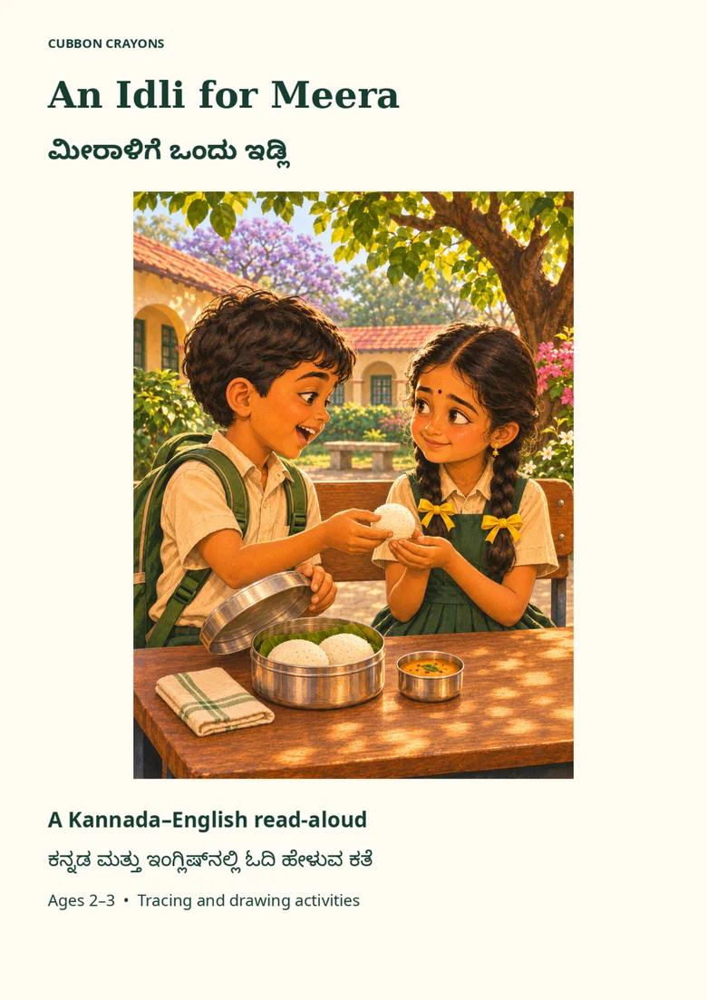

A familiar little story
Auto rides, tiffin boxes and park swings bring kindness into the world your child knows.
ಕನ್ನಡ + ENGLISH · MADE FOR TIME TOGETHER
Kannada–English stories, tracing activities and gentle conversation prompts to enjoy with your child.
Printable A4 PDFs · Read together · Trace at your child’s pace
MORE THAN A STORY
One printable book. A little time together.
Auto rides, tiffin boxes and park swings bring kindness into the world your child knows.
Pause to notice a face, name a feeling or practise a gentle way to ask for help.
Little hands can follow an object from the story. Start with a finger, then try a crayon when ready.
THE STORY COLLECTION
₹49 each · Digital PDFs
Open “Peek inside” for a story excerpt or overview, an activity illustration and a question to try together.
Empathy & kindness
ಅಪ್ಪಿ ಮತ್ತು ಪುಟ್ಟ ನೀಲಿ ಕೊಡೆ
Appi notices Meera is cold in the rain. He offers help and turns to Appa when they need a bigger umbrella.
Appi was playing in the park. Tap, tap, tap! The rain began. He opened his little blue umbrella.
Simplified activity illustration; PDF layout differs.
Trace the curved canopy, lower edge, straight handle and hook of a big umbrella, one path at a time.
Read together: notice how Meera’s feelings change.
Trace together: curved lines and a hook; try one path at a time.
This is a web preview, not a full PDF page.

Sharing
ಮೀರಾಳಿಗೆ ಒಂದು ಇಡ್ಲಿ
Meera’s tiffin is empty. Appi offers her an idli, turning an everyday lunch into a moment of sharing.
Meera’s empty tiffin gives Appi a chance to notice a friend and offer something to share.
Simplified activity illustration; PDF layout differs.
Trace the rounded idli shape and draw a smile. Talk about a small thing you could share.
Read together: talk about sharing something familiar.
Trace together: rounded shapes; a grown-up can help start.
This is a web preview, not a full PDF page.

Helping at home
ಅಪ್ಪಿಯ ಪುಟ್ಟ ಸಹಾಯ
Appi notices Amma is tired. Small acts of help become a chance to ask, listen and care.
Appi gently touched Amma’s shoulder. “Amma, are you okay? Do you need anything?” he asked.
Simplified activity illustration; PDF layout differs.
Trace a glass and a toy basket, then practise putting one toy away together.
Read together: notice tiredness and practise asking before helping.
Trace together: straight and curved edges across two objects.
This is a web preview, not a full PDF page.

Caring for others
ಅಜ್ಜನಿಗಾಗಿ ಆಟೋ ಸವಾರಿ
Ajja’s knee hurts. Appi goes with him to the doctor in a familiar auto-rickshaw.
An auto ride with Ajja becomes a story about noticing pain, staying nearby and showing care.
Simplified activity illustration; PDF layout differs.
Trace the auto-rickshaw from the story. Make a gentle auto sound and talk about caring for Ajja.
Read together: talk about care when someone feels uncomfortable.
Trace together: several vehicle parts; choose one part to begin.
This is a web preview, not a full PDF page.

Taking turns
ಪಾರ್ಕಿನಲ್ಲಿ ಅಪ್ಪಿ
Appi and Meera both want the swing. Explore big feelings, gentle hands and words for asking for a turn.
“The swing!” said Appi. “Suiii, suiii!” he sang as he watched it move.
Simplified activity illustration; PDF layout differs.
Trace a swing and a soft cloth. Practise offering help gently and asking for the next turn.
Read together: pause to name feelings and practise safe hands.
Trace together: straight straps, curved seat and cloth edges.
This is a web preview, not a full PDF page.
FOLLOW YOUR CHILD’S PACE
Enjoy the story aloud with a grown-up. Your child can point, make a sound or name a feeling without holding a pencil. For tracing, try a finger first and offer more help with curves or several parts. One line is enough for a first try.
Each preview describes the reading and tracing support involved. Choose by your child’s interest and comfort rather than expecting every activity to suit the same age.
FROM OUR BOOK TO YOUR TABLE
Explore a preview, then use “Buy story” to open that book’s Payhip page and review the details before paying.
After successful payment, use Payhip’s download page or the download link in your purchase email.
Print on A4 paper, sit together and follow your child’s interest. Read, pause, talk and try a little tracing.
Every product here is a digital PDF. No physical book is shipped.
A FEW HELPFUL ANSWERS
No. You receive a digital PDF to download and print at home or at a print shop. There is no physical delivery.
Complete your purchase on Payhip. After successful payment, use its download page or the download link in your purchase email. If you cannot find the email, check spam, then contact us through Payhip for help.
The books in this collection include Kannada and English. Read in whichever language feels comfortable, or enjoy both together.
They are designed for little readers to enjoy with a grown-up. Listening, talking about feelings and tracing require different kinds of support. Use each story’s preview to choose a comfortable activity. A child can join in by pointing or making sounds before they are ready to trace.
You need a PDF viewer, A4 paper and access to a printer. Use portrait orientation and check the print preview before printing. “Fit to printable area” can help prevent clipped edges. Try a finger, crayon or pencil for the activities, with a grown-up nearby.
You may read and print the PDF for your own household. Please do not forward, upload, resell or distribute the file. For classroom or wider use, ask us about permission. See the copyright and licence information.
Contact Cubbon Crayons through Payhip with the story name and purchase details. Read our refund policy for the applicable terms.
A NOTE FROM NEERAJ
As a parent, I wanted a simple way to show my child what kindness looks like in everyday life.
Many of us learned about right and wrong through Ajja and Ajji’s stories. Let’s make time for them again.
That is the thought behind Cubbon Crayons: familiar Kannada–English stories and activities that give families something to read, talk about and try together.
Follow @cubboncrayons on InstagramA little story can begin a lovely conversation.
Choose a story · ₹49 each